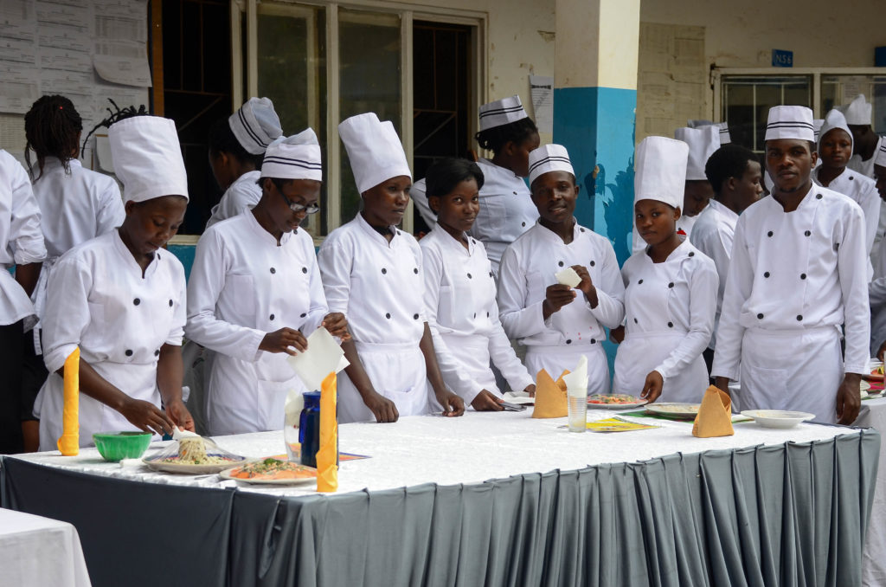
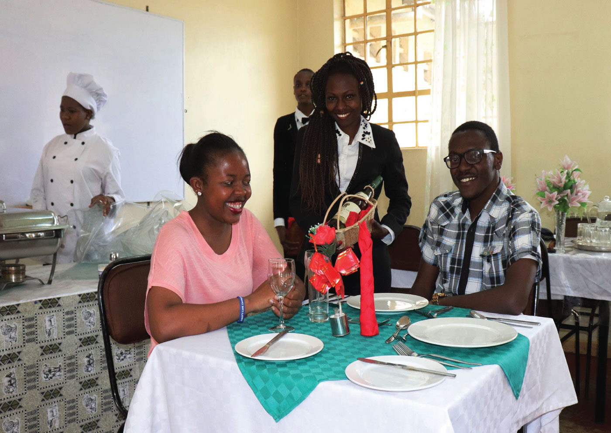
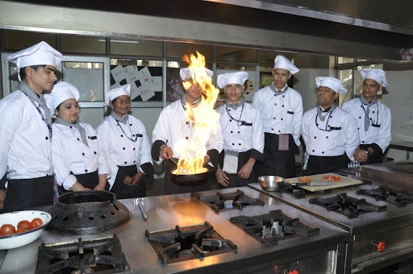
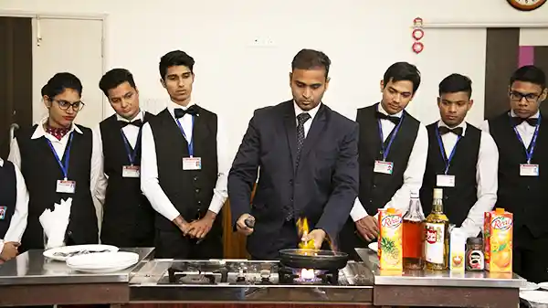
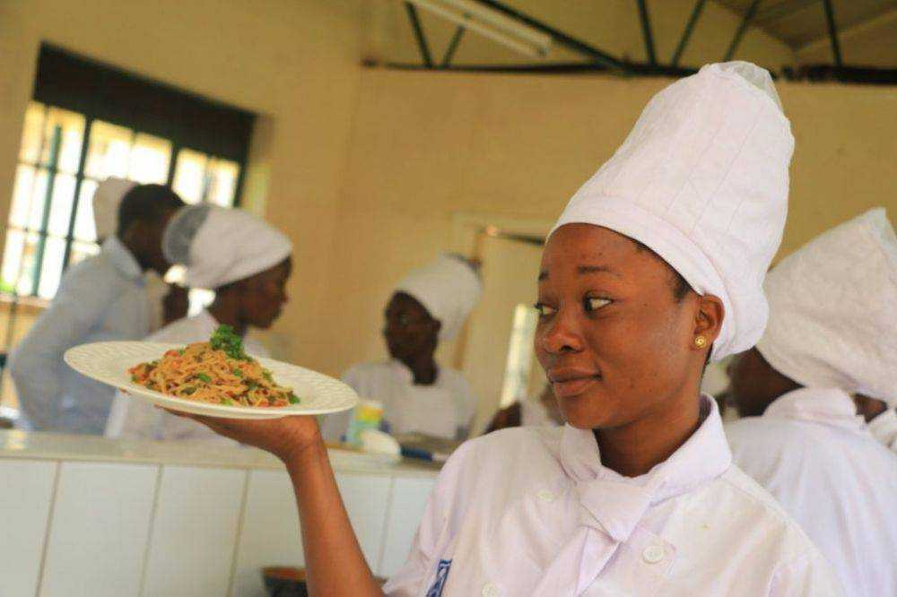

Globally the Hospitality Industry, which encompasses tourism, catering, lodging, events management, transportation, among others, has seen immense growth. Ghana is not an exception and this has necessitated the need for qualified personnel to manage the sector efficiently and effectively. The Hotel Catering and Institutional Management (HCIM) Department, under the Faculty of Applied Sciences and Technology, has been training students at the Higher National Diploma level for both Regular and Parallel programmes. The Department also offers Intermediate Cookery and a competency-based diploma programme in collaboration with the Presbyterian Centre food Vocational Instructors Development. The Department started Bachelor of Technology in Hospitality Management and Catering Technology (4 years and Top Up) both Regular and Parallel programme in the 2019/2020 Academic year. The Department of HCIM effectively imparts knowledge and skills to students through training modules in theory and practical work to equip them with the requisite skills so they can deliver at the job market.
The department seeks to achieve the following objectives:
To be internationally recognized as a Centre for training people for the Hospitality and Tourism industry for effective job performance
On 12th june 2024 Faculty of Applied Science and Tecnology proudly announces the launch of its cutting-edge robotics program, aimed at inspiring students to explore the fascinating world of automation and artificial intelligence. The initiative aligns with our commitment to providing hands-on learning experiences that prepare students for the future.
The program, set to commence on 20th june 2024, will offer students a unique opportunity to delve into robotics, coding, and problem-solving. Spearheaded by Dr Asare Yaw Obeng (Phd), the curriculum emphasizes practical application and creativity.
[Principal/Head of Faculty Name] expressed excitement, stating, "This program exemplifies our dedication to fostering innovation and preparing students for the evolving technological landscape.".Accompanying the news is a sneak peek into the robotics lab, showcasing students engaging in hands-on activities.
Kumasi-ashanti region, ghana, W/A
+233-591-826-475 / +233-345-654-121
Office Hours: Mondays and Wednesdays, 10:00 AM - 12:00 PM
Consultation: By appointment, please email to schedule.